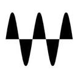

Best AI music mixing and mastering tools (2026)
Mixing and mastering assistants for music: AI mix and master services, mixing and vocal plugin suites, pitch correction and loudness tools. We list 17 tools for music mixing and mastering below, each with a link-checked page, pricing as the maker states it and alternatives.
Updated
17 tools: 2 free or freemium, 7 paid, usage-based or enterprise, 8 pricing on the maker's site.
Music post only. For dialogue and sound for picture, see audio post-production. Every tool: Music production.
Mastering (10)
BandLab
Free cloud music-making platform and DAW with AI tools such as SongStarter and AI mastering, plus collaboration.
Added
CryoMix
Online AI mixing and mastering for vocals, beats and stems, with a free full-length preview.
Added
eMastered
Online AI mastering engine created by Grammy-winning engineers.
Added
iZotope Ozone 12
Mastering suite with an AI Master Assistant and 20 mastering modules as plugins.
Added
LANDR
Creative platform for musicians with AI mastering, plugins, samples and distribution.
Added
Loudly
AI music platform to generate, remix, master and split stems of royalty-free tracks.
Added
Masterchannel
AI mastering modeled on world-class engineers, with control over tone and dynamics.
Added
Moises
Practice and production app that removes vocals, separates instruments, detects chords and masters tracks with AI.
Added
RoEx
Upload stems and get an AI mix and master in minutes.
Added

Waves Online Mastering
Waves' online AI mastering service. Try it free and pay to download masters.
Added
Mixing (4)
Acon Digital Extract:Dialogue
AI dialogue cleaning plugin with real-time reverb reduction and simple mixer controls.
Added
iZotope Neutron 5
Mixing plugin suite with an AI Mix Assistant that suggests levels and processing across tracks.
Added
Simulon
iPhone app that turns photos and sketches into 3D assets, places them in your real scene and renders photoreal mixed-reality shots and video.
Added
sonible
AI-assisted mixing plugins: smart:EQ, smart:comp and smart:limit set themselves from your audio, plus an AI-powered level rider.
Added
Vocal tuning and vocal plugins (3)
AutoTune
Antares' pitch-correction plugins plus AI-powered vocal mixing tools for vocal tuning and effects.
Added
iZotope Nectar 4
Vocal mixing plugin suite with an AI Vocal Assistant for EQ, compression, de-essing and pitch.
Added
Logic Pro
Apple's DAW for Mac and iPad with AI features: Session Players, Stem Splitter, ChromaGlow and machine-learning pitch correction.
Added
Browse these categories
Related tasks
Popular with: Musicians and producers
Tools are matched to tasks by category, use cases and what each tool says it does. Missing one? Submit it free.